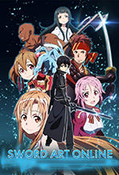
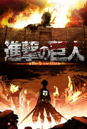
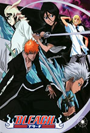
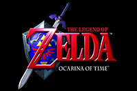
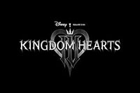
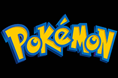
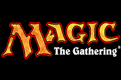

Please click on a poster above and it will expand a section holding a description of the selected anime.
Hobbies
Anime




Bleach
12 Seasons
Sword Art Online:
In the year 2022, a revolutionary virtual reality MMORPG called Sword Art Online
launches, allowing players to fully immerse themselves in a fantasy world using
a neural interface called NerveGear. But the excitement turns to terror when
thousands of players discover they’re trapped inside the game, and the only way
to escape is to beat all 100 floors of the floating castle Aincrad. If they die
in the game, they die in real life.
The story follows Kirito, a skilled solo player who becomes a central figure in
the fight for survival. As he battles monsters, clears dungeons, and uncovers
the secrets behind the game’s deadly trap, he forms deep bonds with other
players, especially Asuna, a fierce and compassionate warrior. Together, they
navigate the psychological toll of living in a digital prison while trying to
hold onto their humanity.
The series spans multiple game worlds, each with its own rules and dangers,
including Alfheim Online, Gun Gale Online, and Underworld, expanding the scope
from fantasy to sci-fi and philosophical themes.
Why It’s Good:
Bleach:
Bleach follows Ichigo Kurosaki, a seemingly ordinary high school student with
the extraordinary ability to see ghosts. His life changes forever when he
encounters Rukia Kuchiki, a Soul Reaper — a guardian of the spiritual balance
between the human world and the afterlife. When Rukia is injured during a
battle with a malevolent spirit known as a Hollow, Ichigo takes on her powers
to protect his family, inadvertently becoming a Soul Reaper himself.
This act draws Ichigo into the hidden world of the Soul Society, a realm
governed by powerful squads of Soul Reapers tasked with purifying Hollows and
guiding souls to peace. As Ichigo trains and fights alongside allies like
Orihime, Chad, and Uryu, he uncovers deep conspiracies, ancient rivalries,
and the true nature of his own spiritual power — which may be more complex
than anyone imagined.M
The series spans multiple arcs, including the Soul Society invasion, the
battle against the Arrancars and Espada, and the war with the Quincy, each
escalating the stakes and expanding the mythos of the Bleach universe.
Why its Good:
Black Clover:
In a world where magic is everything, nearly every person is born with the ability
to wield mana, the life force that powers spells. But Asta, a loud, determined orphan,
is born without any magical power at all. Despite this, he dreams of becoming the
Wizard King, the strongest mage in the Clover Kingdom. His rival and childhood
friend Yuno, a prodigy with immense magical talent, shares the same goal.
During a coming-of-age ceremony, Yuno receives a rare four-leaf grimoire, symbolizing
exceptional potential. Shockingly, Asta receives a mysterious five-leaf grimoire that
houses anti-magic — a power that nullifies spells. This sets him on a unique path,
allowing him to fight mages on equal footing despite having no mana.
The story follows Asta and Yuno as they join different Magic Knight squads and
rise through the ranks, facing off against rogue mages, ancient curses, and powerful
enemies from rival kingdoms. Along the way, Asta’s relentless optimism and refusal
to give up inspire allies and challenge the status quo of a society built on magical
hierarchy.
Why it's Good:
Avatar: The Last Airbender:
In a world divided into four elemental nations — Water, Earth, Fire, and Air,
some individuals are born with the ability to “bend” their native element.
Only one person, the Avatar, can master all four and maintain balance between
the nations. But when the Fire Nation launches a brutal campaign to conquer
the world, the Avatar disappears, and hope vanishes with him.
A hundred years later, two siblings from the Southern Water Tribe Katara and
Sokka, a waterbender and her brother, discover a boy frozen in an iceberg.
He is Aang, the long-lost Avatar and the last surviving Airbender. As Aang
awakens to a world ravaged by war, he must come to terms with his destiny
and master the remaining elements before the Fire Nation achieves total
domination.
The series follows Aang and his growing team, including Toph, a blind
earthbending prodigy, and Zuko, a conflicted Fire Nation prince, as
they journey across continents, confront powerful enemies, and uncover
ancient secrets. It’s a coming-of-age story wrapped in epic fantasy,
with humor, heart, and profound emotional depth.
Why it's Good:
Attack on Titan:
In a world where humanity teeters on the brink of extinction, people live confined
within massive walled cities to protect themselves from the Titans — towering,
grotesque humanoid creatures that devour humans seemingly without reason. For over
a century, the walls have held. But when a colossal Titan breaches the outer
barrier, chaos erupts and survival becomes a desperate struggle.
The story follows Eren Yeager, a passionate and impulsive young man who vows to
eradicate every Titan after witnessing the destruction of his hometown and the
death of his mother. Alongside his adoptive sister Mikasa Ackerman and his best
friend Armin Arlert, Eren joins the elite Scout Regiment — a military force
tasked with venturing beyond the walls to uncover the truth about the Titans
and reclaim lost territory.
As the series unfolds, it evolves from a survival horror into a complex political
and philosophical drama. Secrets buried deep within the walls, the origins of the
Titans, and the nature of freedom itself come to light, challenging everything
the characters thought they knew.
Why it's good:
Plex
PLEX MEDIA SERVER
This section will expand accordion style to show the description content below
This section will expand accordion style to show the description content below
PLEX SERVER - This section will be hidden until the user selects the above section on the right
Plex Media Server is a powerful software platform that lets you organize, stream, and
access your personal media collection—movies, TV shows, music, photos, and more—from
virtually any device. It transforms your computer, NAS, or compatible server into a
centralized media hub, making your content available across your home network or
remotely over the internet.
At its core, Plex scans your media folders, automatically fetching metadata like cover art,
cast info, episode summaries, and ratings to create a polished, Netflix-style interface.
It supports a wide range of file formats and codecs, and can transcode media on the fly to
ensure smooth playback on different devices, including smartphones, tablets, smart TVs,
game consoles, and web browsers.
One of Plex’s standout features is remote access. Once configured, you can stream your media
from anywhere in the world, without needing to upload it to the cloud. Plex also supports
user accounts and parental controls, allowing you to share your library with friends or
family while managing what each person can see.
Beyond personal media, Plex offers free ad-supported streaming of movies, shows, and live TV
channels. It also integrates with services like TIDAL for music streaming and supports
plugins for added functionality.
For enthusiasts, Plex provides advanced features like library customization, metadata
editing, and server monitoring. You can tag content, create collections, and even track
watched status across devices. With Plex Pass (its premium subscription), you unlock extras
like mobile sync, hardware-accelerated transcoding, DVR for live TV, and early access
to new features.
In short, Plex Media Server is a versatile, user-friendly solution for managing and enjoying
your media collection, whether you're at home or on the go.
PLEX MEDIA PLAYER
This section will expand accordion style to show the description content below
This section will expand accordion style to show the description content below
PLEX MEDIA PLAYER - This section will be hidden until the user selects the above section on the right
Plex Movies & TV is the viewer-facing experience of Plex, offering a sleek, intuitive
interface for streaming both personal and free content. Whether you're watching your
own media collection or exploring Plex’s free streaming library, the platform delivers a
polished, cinematic experience across devices.
For personal libraries, Plex displays your movies and shows with rich metadata—cover art,
cast lists, trailers, and episode summaries—making your collection feel like a
professional streaming service. You can resume playback across devices, track what
you've watched, and create custom playlists or collections. Plex supports subtitles,
multiple audio tracks, and even lets you adjust playback speed.
Beyond your own media, Plex offers free ad-supported streaming of thousands of movies and TV
shows from major studios, plus live TV channels covering news, sports, and
entertainment. You don’t need a subscription to access this content, and it’s available
globally.
The viewer interface is designed for flexibility: you can stream on smart TVs, mobile apps,
web browsers, or game consoles. Plex also supports watch together sessions,
so you can sync playback with friends remotely.
In short, Plex Movies & TV gives you a unified, elegant way to enjoy both personal and
free streaming content—no matter where you are or what device you're using.
FILE MANAGEMENT
This section will expand accordion style to show the description content below
This section will expand accordion style to show the description content below
FILE MANAGEMENT - This section will be hidden until the user selects the above section on the right
Managing files for Plex Media Server requires a clean, organized approach to ensure smooth
scanning, accurate metadata matching, and a seamless viewing experience.
Plex doesn’t store your media—it indexes and streams it—so your folder structure and naming
conventions play a critical role.
At the core, Plex expects your media to be stored in clearly separated folders by type:
Plex uses filenames and folder names to match metadata from online databases. Including the
release year, season/episode codes, and avoiding clutter (like extra tags or scene
release info) improves accuracy. You can also add local metadata—like posters,
subtitles, and NFO files—if you want full control.
Movies/Inception (2010)/Inception (2010).mp4
TV Shows/Breaking Bad/Season 01/Breaking Bad - S01E01.mkv
Music/Radiohead/In Rainbows/01 - 15 Step.mp3
This helps Plex identify episodes and seasons correctly.
Storage-wise, Plex supports internal drives, external USBs, NAS devices, and network
shares. It’s best to keep your media on a drive with fast read speeds, especially for
high-resolution content. You can add multiple libraries in Plex, each pointing to different
folders or drives.
Once your files are organized, Plex scans them and builds your library. You can trigger
manual scans or set up automatic updates. If you move or rename files, Plex may lose
track of them unless you refresh the library.
In short, Plex thrives on tidy folders, consistent naming, and thoughtful structure. A
well-managed media library means faster scans, better metadata, and a smoother
experience across all your devices.
Games




Only one of the following entries will be displayed at a time depending on the movie poster the person clicks on
The Legend of Zelda:
The Legend of Zelda is a fantasy action-adventure series where players guide Link, a
courageous hero, through epic quests to rescue Princess Zelda and protect the kingdom of
Hyrule.
Each game features exploration, puzzle-solving, and combat across richly designed worlds
filled with dungeons, secrets, and legendary artifacts like the Master Sword and Triforce.
The series evolves with each installment, offering new mechanics, timelines, and lore while
maintaining its iconic themes of courage, wisdom, and power.
Why it’s good:
It blends immersive worldbuilding with clever gameplay and emotional storytelling.
From classic 2D adventures to expansive open-world epics, Zelda games consistently deliver
memorable experiences that challenge players’ minds and reward curiosity.
Kingdom Hearts:
Kingdom Hearts is an action RPG series that blends the worlds of Disney and Final Fantasy
into a unique, emotionally rich adventure.
Players follow Sora, a Keyblade wielder, as he travels across diverse worlds to battle
darkness, rescue friends, and uncover the mysteries of hearts and identity.
The gameplay combines fast-paced combat, exploration, and cinematic storytelling, with each
installment deepening the lore and character relationships.
Why it’s good:
It offers a heartfelt narrative wrapped in imaginative worlds, iconic characters, and
dynamic gameplay.
With its blend of nostalgia, philosophical depth, and real-time action, Kingdom Hearts
stands out as a genre-defining series that continues to captivate fans across generations.
Pokemon:
Pokémon is a global phenomenon where players become Trainers, capturing and battling
fantastical creatures called Pokémon.
Each Pokémon has unique abilities, types, and evolutions, and the goal is to build a team,
train them, and compete in turn-based battles.
The franchise spans multiple regions, each with its own story, legendary Pokémon, and
challenges, encouraging exploration and strategy.
Why it’s good:
It combines adventure, collection, and tactical gameplay in a vibrant world filled with
memorable characters and creatures.
With its blend of nostalgia, competitive depth, and constant innovation across generations,
Pokémon remains one of the most beloved and enduring game series ever.
Magic The Gathering:
Magic: The Gathering is a strategic trading card game where players take on the role of
powerful spellcasters called Planeswalkers.
Using customized decks built from thousands of unique cards, players summon creatures, cast
spells, and battle opponents across diverse fantasy worlds.
The game blends tactical depth with rich lore, spanning decades of storytelling across
planes like Dominaria, Ravnica, and Zendikar.
Why it’s good:
It offers endless strategic variety, rewarding creativity and skill. With constantly
evolving sets, competitive formats, and immersive worldbuilding,
Magic appeals to casual players and tournament veterans alike. Its blend of collectible art,
deep mechanics, and narrative depth makes it a cornerstone of modern gaming.